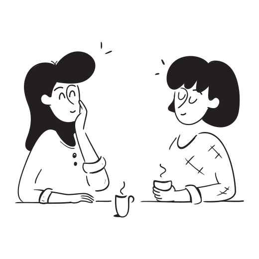
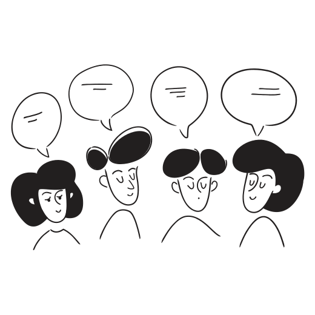
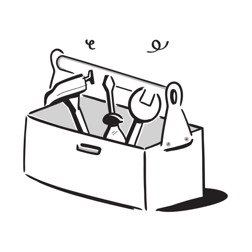
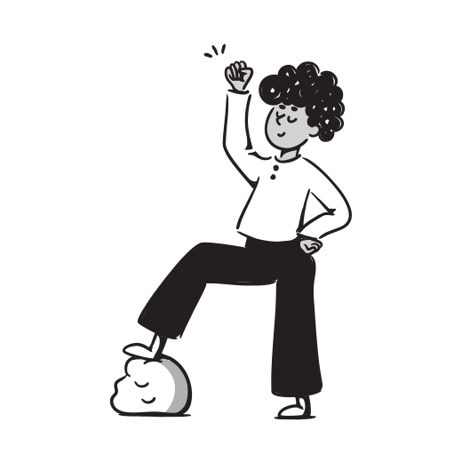
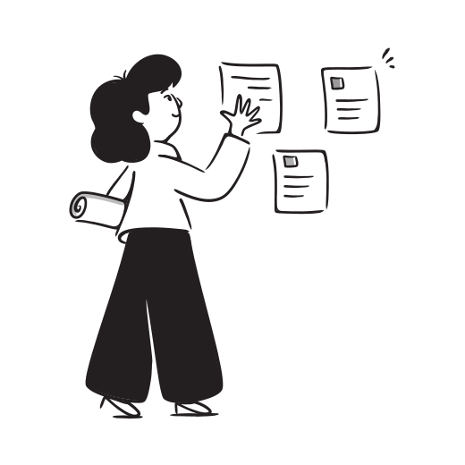

The change
 New staff have to ask multiple people to find basic information
New staff have to ask multiple people to find basic information
Before vs. with Notion
Before Notion
Docs spread across Google Drive, email, WhatsApp, and desktops
Important messages and decisions get buried and forgotten
Duplicate files everywhere — no one knows which is the latest version
Hard to track who is doing what, and when things are due
New staff have to ask multiple people to find basic information
With Notion
One searchable workspace — everything is findable in seconds
Shared visibility across all teams — everyone sees the same thing
One latest version of everything, always up to date
Clear ownership and tracking — tasks are assigned and visible
New staff can self-serve — find answers without interrupting others
The flexibility


Same info, different views
Table
Spreadsheet style
Board
Workflow stages
Calendar
Schedule view
List
Simple overview
Gallery
Visual cards
Table View — Events Database
| Event | Date | Owner | Status |
|---|---|---|---|
| Sunday Service | 25 May | Endo | Done |
| Youth Night | 28 May | Josh | In progress |
| Staff Day | 1 Jun | Ify | Planned |
| Community BBQ | 8 Jun | Andrew | Planned |
Board View — Task Pipeline
📥 To Do
Book sound engineer
Design event flyer
🔄 In Progress
Confirm venue setup
Volunteer outreach
✅ Done
Catering ordered
Invites sent
Calendar View — May 2026
M
T
W
T
F
S
S
1
2
3
4
5
6
7
8
9
10
11
12
13
14
15
16
17
18
19
20
21
22
23
24
25
26
27
28
List View — Task overview
Send invites to speakers
Confirm catering numbers
Create event programme
Arrange parking team
Publish social posts
Gallery View — Resources
Brand Kit

Staff Photos
Event Flyers

Runsheets
Videos

Templates
Just for you
See how your department uses Notion

Naomi Communications Lead Explore → Alisha Website & Marketing Explore → Sarah
Facilities
Explore →
Ify
Events
Explore →
Sarah
Facilities
Explore →
Ify
Events
Explore →

Cassy HR Explore → Susie Learning & Development Explore → Josh Generations Explore → Ify Finance Explore → Andrew Hub Pastor Explore →Each page opens with tailored examples, templates, and ideas for how Notion can support your work.